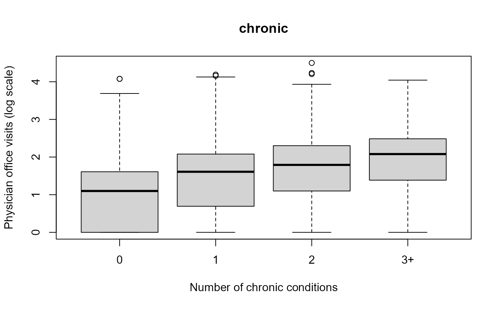
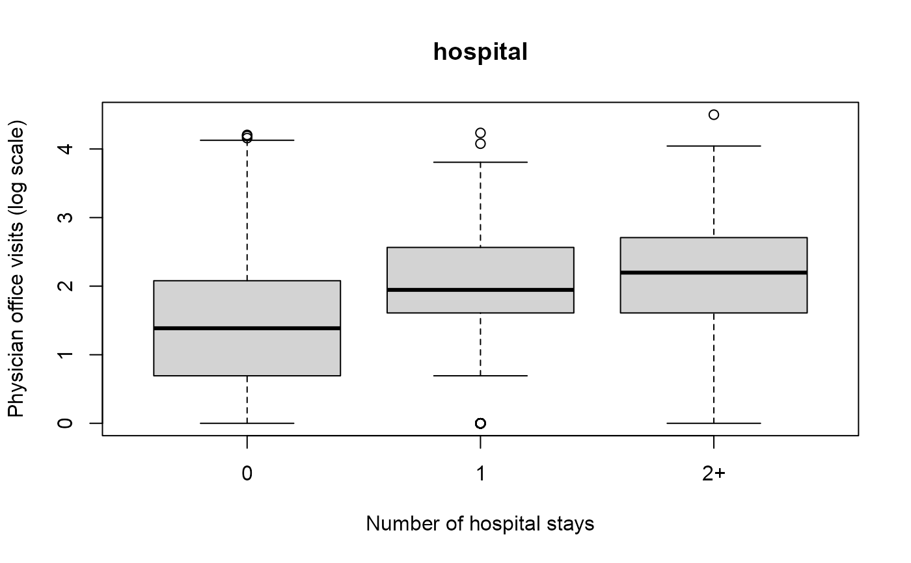
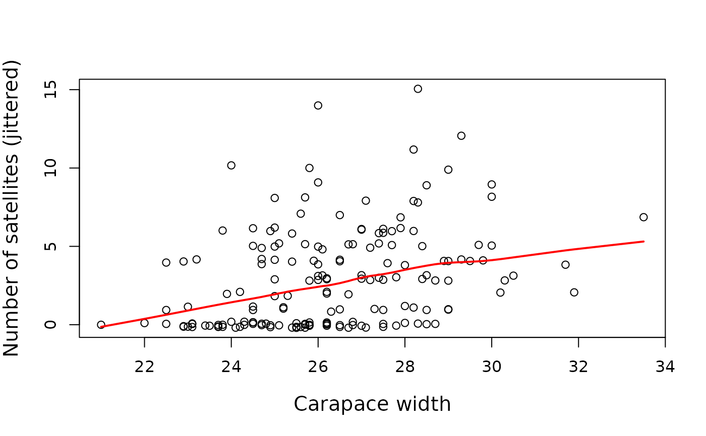
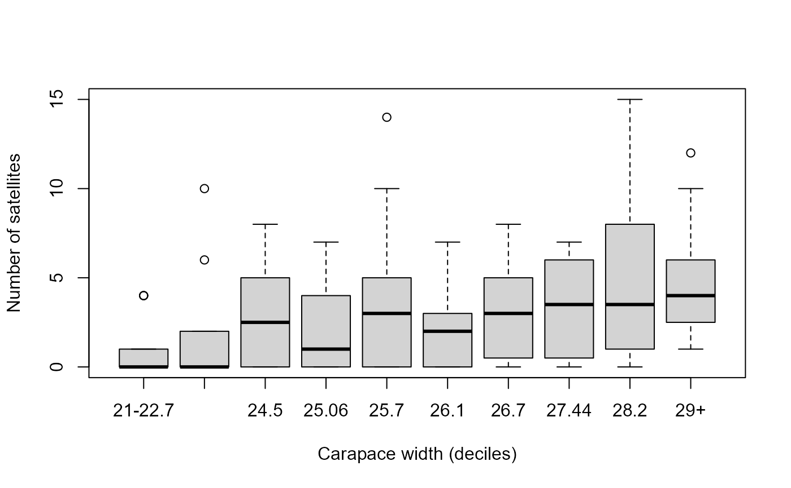

cutfac acts like cut, dividing the range of
x into intervals and coding the values in x according in which
interval they fall. However, it gives nicer labels for the factor levels and
by default chooses convenient breaks among the values based on deciles.
It is particularly useful for plots in which one wants to make a numeric variable discrete for the purpose of getting boxplots, spinograms or mosaic plots.
Arguments
- x
a numeric vector which is to be converted to a factor by cutting
- breaks
either a numeric vector of two or more unique cut points or a single number (greater than or equal to 2) giving the number of intervals into which
xis to be cut.- q
the number of quantile groups used to define
breaks, if that has not been specified.
Value
A factor corresponding to x is returned
Details
By default, cut chooses breaks by equal lengths of the
range of x, whereas cutfac uses quantile
to choose breaks of roughly equal count.
References
Friendly, M. and Meyer, D. (2016). Discrete Data Analysis with R: Visualization and Modeling Techniques for Categorical and Count Data. Boca Raton, FL: Chapman & Hall/CRC. http://ddar.datavis.ca.
Examples
if (require(AER)) {
data("NMES1988", package="AER")
nmes <- NMES1988[, c(1, 6:8, 13, 15, 18)]
plot(log(visits+1) ~ cutfac(chronic),
data = nmes,
ylab = "Physician office visits (log scale)",
xlab = "Number of chronic conditions", main = "chronic")
plot(log(visits+1) ~ cutfac(hospital, c(0:2, 8)),
data = nmes,
ylab = "Physician office visits (log scale)",
xlab = "Number of hospital stays", main = "hospital")
}
#> Loading required package: AER
#> Loading required package: lmtest
#> Loading required package: zoo
#>
#> Attaching package: 'zoo'
#> The following objects are masked from 'package:base':
#>
#> as.Date, as.Date.numeric
#> Loading required package: sandwich
#> Loading required package: survival


data("CrabSatellites", package = "vcdExtra")
# jittered scatterplot
plot(jitter(satellites) ~ width, data=CrabSatellites,
ylab="Number of satellites (jittered)",
xlab="Carapace width",
cex.lab=1.25)
with(CrabSatellites,
lines(lowess(width, satellites), col="red", lwd=2))

# boxplot, using deciles
plot(satellites ~ cutfac(width), data=CrabSatellites,
ylab="Number of satellites",
xlab="Carapace width (deciles)")
